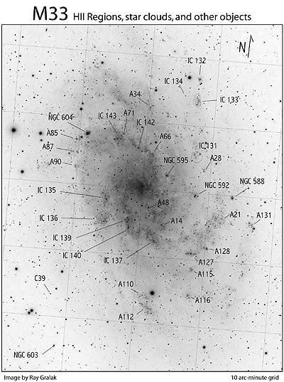

In terms of resolving extragalactic detail there is no better target for northern observers than M33. Due to its relatively close distance (3.0 million light years), face-on orientation and loose Sc structure, the open spiral arms resolve into a multitude of star clouds and HII regions in a dark sky using a 10-inch or larger scope.
The most prominent of these is the supergiant HII complex,
In 1980, Roberta Humphreys and Alan Sandage published a paper "On the Stellar Content and Structure of the Spiral Galaxy M33". This photographic survey using the Palomar 200-inch catalogued
143 associations (a collection of massive OB stars and star-forming regions). Most of these are much fainter than the NGC and IC entries, but a number were tracked down in my 18-inch and
described as A### below.
To tackle this observing project, a detailed finder chart is a necessity as these objects are nearly all located within 15' of the center of M33. Since most of these knots are quite small, I used 225x-260x and tracked down each one individually as if I was hunting for a small, faint galaxy. Then I'd switch to low power to see the location with respect to the spiral arm it was embedded in and in relation to other objects. Bill Cone produced the high-resolution finder chart based on an image taken by Ray Gralak. This is a great project for a complete night's worth of observing, but I found worthwhile to break it up into two nights, so I could check my observations and reobserve any objects or features I missed the first time.
My observing notes are divided up into NGC, IC and Humphrey/Sandage A-objects. If you make it to the end, you'll find
NGC 604: easily the brightest and largest HII knot in M33. Situated at the end of the spiral arm that trails to the east on the north side of the core. A mag 10.5-11 star is located 1.5' SE and 604 is elongated 3:2 in the direction of this star. The outline is oval, though a bit irregular, particularly on the east side. It appears brighter and mottled on the NW side and with direct vision a slightly brighter stellaring glistens near the NW end.
IC 133: faint, fairly large diffuse patch, elongated 5:2 NNW-SSE, 1.0'x0.4'. Located 15' NW of the center of M33 and 4' SSW of the mag 9.3 star.
IC 139/140: a pair of similar, moderately bright, 45" diameter HII knots just 1' apart, situated along the spiral arm winding towards the west on the south side of M33. IC 139 is elongated 3:2 N-S.
A14: faint, fairly small knot, 20"-25" diameter, round, low even surface brightness. Located 3' NW of IC 137 on the SW side.
A21: very faint, large, low surface brightness hazy patch ~2' diameter, on the SW end of M33. Forms the south vertex of an equilateral triangle with NGC 588 4' NW and NGC 592 4.5' NE.
A48: fairly faint, but very small knot just 3.4' SW of the center of M33, ~10" diameter. This fuzzball is collinear to the SW of three stars that skirt just south of the core of M33.
A66: this HII knot appeared as a difficult low contrast spot ~2' S of a mag 11 star and 2.5' SW of IC 142. It required averted vision and only occasionally stood out over the glow of the northern spiral arm that contains IC 142 and IC 143.
A71: very faint, low surface brightness patch, ~20" diameter. Perhaps slightly fainter than nearby IC 143, but with averted vision was a better defined periphery.
A85: extremely faint, low surface brightness knot, ~10" diameter. Located just 50" ESE of a mag 10.5-11 star and symmetrically positioned on the opposite side of this star from NGC 604. Humphrey and Sandage (1980) list the region as a star association (A85), but the compact core is a confirmed open cluster (HST).
A87: this marginal knot is located 3.5' SE of NGC 604. It only popped into view occasionally with averted vision, perhaps 10" diameter. A mag 12 star lies 1' E.
A90: extremely faint knot picked up 2' S of A87, though surprisingly a bit easier than A87. Located on the east side of M33, 5.6' SSE of NGC 604.
A112: fairly large, low surface brightness hazy region, elongated ~3:2 SW-NE, ~1.5'x1', irregular and ill-defined. Located at the south end of the galaxy just 2.5' south of
mag 8.1
A115: very faint HII knot located 15' SW of center in M33. A127 lies 2.5' N.
A116: faint, hazy knot located 5.5' due west of the mag 8 star. Has a fairly sharp edge with averted vision. A very faint star or stellar knot is superimposed.
A127: very faint, moderately large haze surrounding a mag 12.5-13 star, ~1' in diameter. Forms a close pair of star clouds with A128 just 2.5' WNW.
A128: fairly faint, fairly small, round, 25" diameter, close WNW of A127. This HII region houses 3 supernova candidates listed in SIMBAD.
A131: faint, fairly small elongated glow, ~30"x20", located just NE of a mag 11.5 star on the west edge of M33. The starcloud seemed detached from the star by ~40". This reference star forms the SE vertex of a roughly 4'x3' rectangle with 3 other mag 12-12.5 stars.
NGC 603: this is a triple star that was misidentified as a nebulous object by Lord Rosse on November 29, 1850. In my 18-inch it appeared as a faint nebulous spot at low power and was barely resolved at 220x. A trio of mag 14/15 stars was cleanly resolved, though, at 410x. The maximum separation is 15", the close pair at 9" separation with the third side 12" forming a 3-4-5 right triangle. Located 28' SE of the center of M33.
C39: this is the brightest globular cluster in M33 and appears as an extremely faint 16th mag "star" requiring averted vision to glimpse and the exact position to be known.
A fainter mag 16.5 star is sometimes visible 1' SE. Located 22' SE of the center of M33 and 1.2' SE of a mag 11.5 star. A prominent mag 10.5 pair at 30" separation lies 4' SE.
The image above may be clicked to view a printable size version. Click here to download an excel spreadsheet of the M33 HII Regions and Star Clouds.
{kind=link}